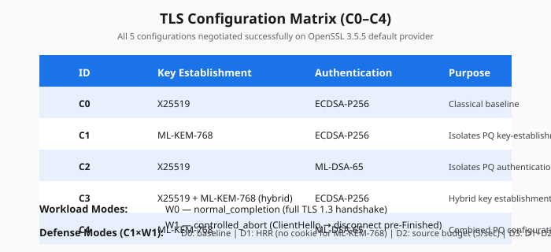
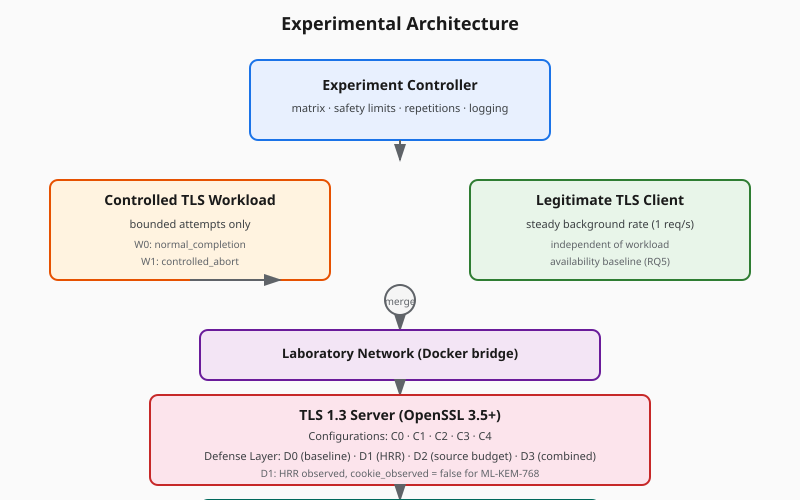
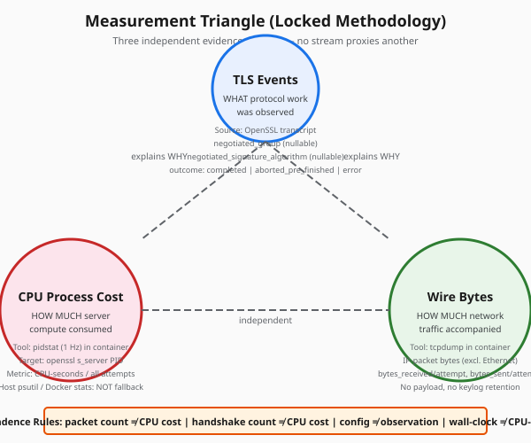
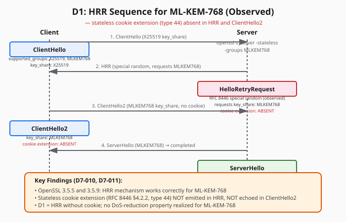
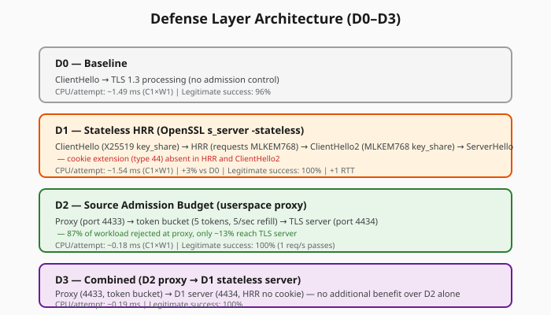

Research Problem
Lee et al. (arXiv:2607.12504, 2026) demonstrated that switching a TLS 1.3 server from classical (ECDSA-P256 + X25519) to post-quantum (ML-KEM-768 + ML-DSA-65) greatly prolongs high-CPU duration under handshake-flood workloads. However, that work did not decompose which cryptographic component drives the incremental cost, nor did it evaluate any defense.
This project addresses five research questions:
RQ1: Component Cost
How does normalized server CPU cost per attempted handshake change when ML-KEM and ML-DSA are introduced independently and jointly?
AnsweredRQ2: Processing Stage
Which handshake stage accounts for the largest incremental PQ-related server cost?
AnsweredRQ3: Key Reuse
Does reusing the client's ML-KEM keypair across attempts materially change server-side processing cost per attempt?
UnresolvedRQ4: Admission Control
Does a stateless TLS 1.3 HelloRetryRequest cookie reduce expensive handshake processing under controlled PQ-TLS exhaustion?
Measured LimitationRQ5: Availability Trade-off
What is the cost, in legitimate-client success rate, latency, and added round trips, of each defense evaluated?
AnsweredC0–C4 Configurations
All five configurations negotiated successfully on OpenSSL 3.5.5 default provider (no oqs-provider required).

Workload Modes
- W0 — normal_completion: Full TLS 1.3 handshake to completion
- W1 — controlled_abort: Client sends ClientHello, disconnects pre-Finished
Hard limits (code-enforced): 1000 attempts, 30 seconds, concurrency 1
Defense Modes (evaluated on C1×W1)
- D0: Baseline (no admission control)
- D1: HRR via
openssl s_server -stateless(cookie_observed=false) - D2: Source admission budget (userspace proxy, token bucket 5 tokens @ 5/sec)
- D3: Combined (D2 proxy → D1 stateless server)
Experimental Architecture

Measurement Triangle
Three independent evidence streams — no stream proxies another:

Results: CPU Cost Decomposition (Phase 5)
Phase 5: C0–C4 × W0/W1 × 3 trials = 30 trials + 2 pilots. All trials valid (measurement_status: measured/measured/observed).
Figure A: CPU-seconds per Attempt by Configuration
Figure B: Incremental Cost Relative to C0
Figure C: Key-Establishment vs Authentication (C1 vs C2 vs C4)
Key Findings
W0 (Completed Handshakes)
- ML-DSA-65 authentication (C2, C4) dominates: ~2× C0 cost
- ML-KEM-768 alone (C1) comparable to classical: 0.95× C0
- Hybrid (C3) modest overhead: 1.06× C0
W1 (Controlled Abort, Pre-Finished)
- C2 and C3 show lower pre-completion cost than C0 (server aborts before signature verification)
- C4 remains high (ML-KEM encapsulation + ML-DSA verification both occur pre-Finished)
- C1 (ML-KEM) higher than C0 in W1: 1.27× C0
Figure D: Key Reuse Experiment (Phase 6, C1×W1)
src/workload/client.py). True ML-KEM keypair reuse requires a custom OpenSSL C API client. The null result (ratio 0.981, Δ = −0.000030 s/att) reflects fresh keypairs in both conditions. RQ3 remains unresolved for true keypair reuse.
D1 Finding: HRR Without Cookie for ML-KEM-768
s_server -stateless path produces HelloRetryRequest for ML-KEM-768 without the stateless cookie extension (RFC 8446 §4.2.2, type 44). cookie_observed = false is a measured outcome, not missing data.

Observed Sequence
- ClientHello — supported_groups: X25519, MLKEM768; key_share: X25519
- HelloRetryRequest — RFC 8446 special random observed; requests key_share: MLKEM768; cookie extension: ABSENT
- ClientHello2 — key_share: MLKEM768; cookie extension: ABSENT
- ServerHello — negotiated group: MLKEM768 → completed
Implication: D1 in this testbed reduces to HRR-induced 1-RTT delay without the stateless cookie's DoS-reduction property. Server still processes ClientHello2 → encapsulation. The custom SSL_stateless() C server was abandoned (D7-010) due to SSL_R_INTERNAL_ERROR in tls_construct_stoc_cookie for ML-KEM-768.
Defense Evaluation (Phase 7, C1×W1×D0–D3×3 trials = 12 campaign trials)
Historical pilots preserved (D1-pilot with 50 attempts). All 12 campaign trials valid.

Figure E: Defense Effectiveness — CPU Reduction
Figure F: Legitimate-Client Trade-off
| Defense | Mechanism | CPU/attempt (ms) | Reduction vs D0 | Legitimate Success | Legitimate p50 Latency | Key Observation |
|---|---|---|---|---|---|---|
| D0 | Baseline | 1.49 | — | 96% (25/26) | 186 ms | No admission control |
| D1 | HRR (no cookie) | 1.54 | +3% | 100% (26/26) | 189 ms | HRR observed, cookie_observed=false; no CPU reduction |
| D2 | Source Budget (5/sec) | 0.18 | −88% | 100% (25/25) | 194 ms | ~87% workload rejected at proxy; only ~13% reach TLS server |
| D3 | D2 + D1 | 0.19 | −87% | 100% (24/24) | 193 ms | No additional benefit over D2 alone |
Engineering Journey: Challenges & Resolutions
Documented from project history (memory.md P1-001 through D7-011). Each follows: Problem → Investigation → Resolution → Final Status.

Reproducibility
Environment
- OpenSSL 3.5.5+ (default provider)
- Docker 29.x + Compose v5.x
- Python 3.11+ (orchestration)
- Alpine 3.22 (containers)
- Linux kernel with pidstat (sysstat), tcpdump
Run Experiments
# Setup
./scripts/setup.sh
# Phase 5: Component decomposition
python scripts/run_phase5.py
# Phase 6: Key reuse
python scripts/run_phase6.py
# Phase 7: Defense evaluation
python scripts/run_phase7.py
python scripts/run_phase7_analysis.pyTest Suite
python -m pytest tests/ -v
# 129 collected
# 122 passed, 7 skipped, 0 failed, 0 errors7 skipped = integration tests requiring live containers (not coverage gaps)
Limitations
- Single-source IP: All traffic from one client IP; no distributed attack simulation
- Localhost/Docker environment: No real network path, no NAT, no middleboxes
- Bounded attempts/time: 1000 attempts / 30 sec / concurrency 1 — not sustained flood
- No application payload: Handshake-only; no record-layer processing measured
- No real Internet traffic: Synthetic workload only
- RTT unavailable for main campaign: Packet-capture RTT parsing implemented for Phase 7 validation only; main campaign reports wall-clock latency only
- D1 cookie absent: OpenSSL 3.5.x does not emit stateless cookie for ML-KEM-768; D1 ≠ RFC 8446 cookie defense
- Phase 6 keypair reuse not actually tested: Client falls back to fresh keypair per attempt
- Docker Desktop networking: Bridge network on Windows/macOS host adds variability
- Single OpenSSL version: Results specific to 3.5.x default provider; other providers/versions may differ
Safety Boundary
All experiments are strictly bounded and localhost-only:
- Target allowlist:
localhost,127.0.0.1,::1, Docker service names (resolvable only inside lab network) - Hard ceilings (code-enforced): 1000 attempts, 30 seconds, concurrency 1
- No unbounded mode, no IP spoofing, no public-target discovery, no reflection/amplification
- Mandatory preflight test (
tests/test_preflight.py) must pass before any run - No custom cryptography: OpenSSL 3.5+ exclusively